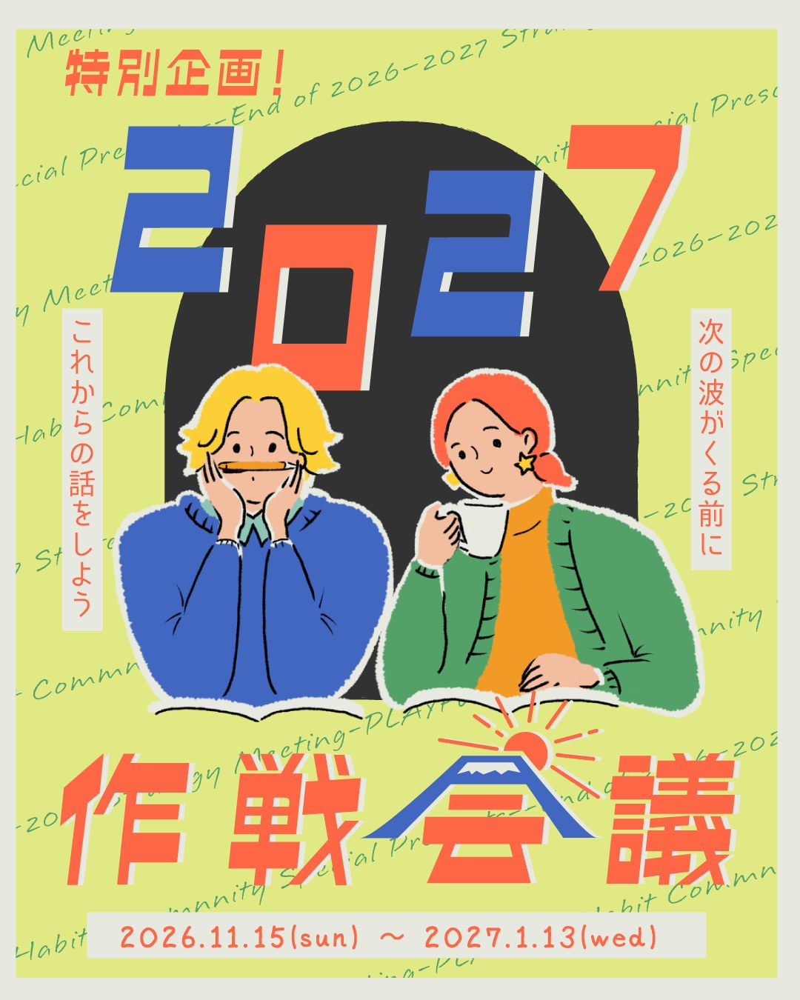
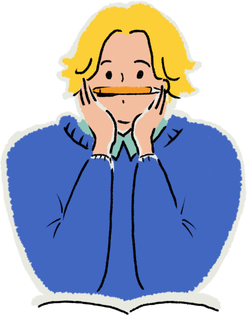
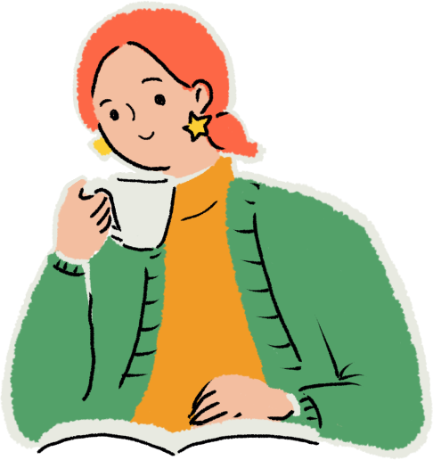
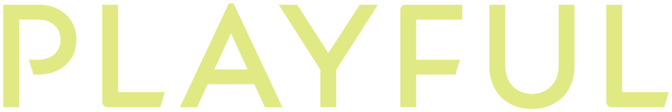

週に１回、問いが届く
運営から、毎週ひとつ問いを投げます。
PLAYFULノートをもとにした、自分と対話するための問いです。
一問一答で答えられる形にしているので、忙しい週も大丈夫。

２０２７年は
自分の波乗りを楽しもう
この半年、習慣コミュニティで起きたこと。
Welcome to theHabit Community!
５・６月の習慣化コミュニティ。
８月からの、お金のうつわを育てる習慣コミュニティ。
２回にわたって、みんなで取り組んできました。
その中で、はっきり分かったことがあります。
意識と、１日の行動を変えれば、
変化は確実に起こせる。
これは気合いや根性の話ではなく、
メンバーのみなさんに実際に起きた、事実の話です。
詳しくは、メンバーの声で。
変化は、起こせる。
でも、その変化がどこに向かっているかで、
習慣が、毎日の行動選択の質が、まったく変わってくる。
自分が向かいたい方向に、ちゃんと進んでいるか。
その観点があると、
毎日の行動が「大きなうねり」になって追い風が吹きはじめる。
逆に、方向が定まらないまま走り続けると、
がんばっているのに、なぜか消耗して歩みが止まる。
だから、年が切り替わるこのタイミングで、一度作戦会議をします。
自分自身と対話しながら、
２０２７年を、どう過ごすか。
何に力を入れて、何を手放すか。
それを決める２ヶ月が、
「２０２７年作戦会議」です。
２０２６年、けっこうがんばった。
でも「何に向かってたんだっけ？」と、ふと思うことがある。
目標を立てても、気分のムラで、
モチベーションが続かない。
がむしゃらに走り続けるより、
自分の波乗りを、楽しめるようになりたい。
YESが３つ続いたあなたへ。
２０２７年の作戦、一緒に立てませんか。
運営から、毎週ひとつ問いを投げます。
PLAYFULノートをもとにした、自分と対話するための問いです。
一問一答で答えられる形にしているので、忙しい週も大丈夫。
夜２１時から２３時まで。
最初の１５〜３０分は、習慣・お金・人間関係など人生の波乗りを楽しむコツを詰め込んだ講義（アーカイブあり）。
その後、参加メンバーでのシェアタイム・個別相談・質問で、さらに自分仕様の作戦精度を高めていきます。
自分のホロスコープをもとに、あなたが本当に大事にしているものと、目指す方向を言葉にするワークを実施。
やる気が出るとき、止まるとき。
そのとき、どんなブロックが出ているか。
自分の出来事から、自分だけのパターンを見つけます。
これが、２０２７年の「迷ったときの判断基準」になります。
１期に続いて、Bandでつながります。
見ているだけでも効果絶大。
１人で起きた小さな波が、グループ全体に派生して大きな渦に変わる瞬間をぜひ体感してください。
そしてこれは、そのまま２０２７年につながります。
２０２７年からの習慣コミュニティでは、
この行動指針をもとに、「自分の波乗り」を楽しむことに取り組む予定です。
「この先どうなるか分からない不安がとても大きくて（…）本当に最近やっと…私はこの仕事でずっと過ごすイメージが湧いてきた」
「自分を取り戻していけるホームだなと感じてます」
「正直、習慣化でここまで余白が出来て（…）物事がいい方向に進んで行くとは思ってなくて！ 今、ただただビックリしてます」
「変わってきた実感があります。自分を責めなくなった！！」
「このコミュニティがあって他の方の気付きや習慣化する工夫などを目にすることができることがありがたいです」
「頑張らなくていい！ 一回でもできたらオッケーで続けられてます！」
「『生きているだけで１００点満点』という安心基地をこの場所で仲間と共有できたことが、何より幸せ」
いつも月末になると売上を見て落ち込んでいたのが、暇そうだなと思っててもポンって予約が入る。気づけば先月は凹んでいなかった
小さい変化に気付けない人は、
大きい変化の波に上手に乗れません。
数百万円の変化も、
人生でやりたいことも、
今日選んだ小さな行動の変化から始まっています。
自分と向き合う問いに答えるだけなら、
ひとりでもできます。
でも、この半年で僕たちが見てきたのは、
「やりたいのにできない。壁にぶつかる理由が自分では分からない」という声でした。
自分に起きていることは、なかなか見えない。
人のことは分かるのに、自分のことになると分からない。
人は、誰かに話すことで初めて
「本当の自分」が見えてくるものです。
菅原夫婦は夜な夜な周りの人たちの
天才性や個性について会話する習性があります。
開示が多い人ほど精度が上がるので、
どんどん素材を投下して活用してください。
もちろん、僕たちも参加者として、２０２７年を考えます。

SHO
伝える、話す、外に出す
頭の中にあるものを、出し惜しみせず外へ。
２０２７年は「出す人」になります。
わくわくお兄さん、本格始動です。

KEI
捉える、形にする、表現する
ひらめきをかたちにする。
手を動かして、どんどん出す。
２０２７年は「表現する人」になります。
さあ、あなたの
２０２７年は？
| 参加料 （約２ヶ月） | 入会金 | お支払い | |
|---|---|---|---|
| ０期・１期メンバー （５月〜１０月） | ¥8,800 | なし | ¥8,800 |
| はじめての方 | ¥8,800 | ¥11,000 | ¥19,800 |
Zoomは全５回。時間はすべて ２１：００〜２３：００ です。
| 回 | 日付 | 時間 |
|---|---|---|
| 1 | 11月15日（日）キックオフ | 21:00–23:00 |
| 2 | 11月29日（日） | 21:00–23:00 |
| 3 | 12月13日（日） | 21:00–23:00 |
| 4 | 12月28日（月） | 21:00–23:00 |
| 5 | 2027年1月13日（水） | 21:00–23:00 |
下のボタンから、Googleフォームでお申し込み
振込先のご案内が届きます → 参加料をお振込み
Bandにご招待します
１１月１５日（日）２１：００、Zoomでキックオフ
大丈夫です。今回は初めての方も安心して取り組んでいただける内容になっています。
一問一答で答えられる形にしています。答えられない週があっても、問題ありません。
Zoomの講義部分はアーカイブが残るので、期間内はいつでも、何回でも視聴できます。
講義終了後の質問・交流会は、内容によってアーカイブ提供or記事化するかも。
いいえ。見ているだけでも、リアクションだけでも大丈夫です。
ただし、傾向として積極参加している人の方が変化が圧倒的に早いので飛び込んでみてね。
任意ですが、続けることをおすすめします。「今後もお金に向き合い続ける！」という方には、引き続きサポートします。もちろん今回から始める方にも。
任意です。２０２７年に参加する人は、今回の内容はかなり助けになると思います。
主宰 / 伴走
菅原 祥・慧
すがはら しょう・けい

「自分を最大限生きる人を増やす」
という理念のもと、
自分たちも体現するために
日々研究と実践を重ねる夫婦。
これを叶える最も効果的な手段として、
「習慣」の見直しを推奨している。
気さくなキャラクターと、
その人がつまずいているポイントを見抜き、
根本から変化を起こすアドバイスに定評がある。
たまに、怪しい話もする。